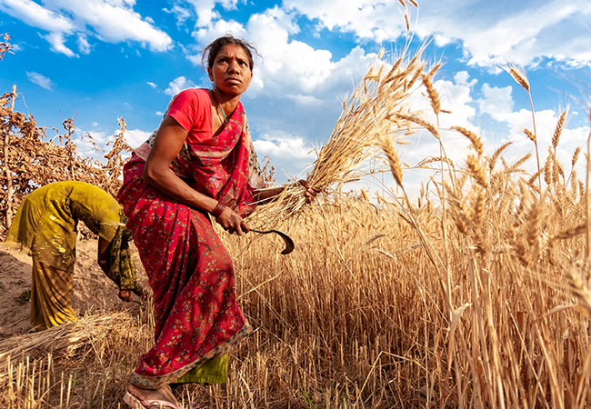

The history of thousands of years ago.Plants were independently cultivated in at least 11 regions of the world
The history of thousands of years ago.Wild grains were collected and eaten from at least 105,000 years ago.The history of thousands of years ago.Wild grains were collected and eaten from at least 105,000 years ago .
Over one-third of the world's workers are employed in agriculture, second only to the service sector, although in recent decades, the global trend of a decreasing number of agricultural workers continues, especially in developing countries, where smallholding is being overtaken by industrial agriculture and mechanization that brings an enormous crop yield increase.
Over one-third of the world's workers are employed in agriculture, second only to the service sector, although in recent decades, the global trend of a decreasing number of agricultural workers continues, especially in developing countries, where smallholding is being overtaken by industrial agriculture and mechanization that brings an enormous crop yield increase.
CUTTING
Plants were independently cultivated in at least 11 regions of the world
Over one-third of the world's workers are employed in agriculture, second only to the service sector, although in recent decades, the global trend of a decreasing number of agricultural workers continues, especially in developing countries, where smallholding is being overtaken by industrial agriculture and mechanization that brings an enormous crop yield increase.
The history of agriculture began thousands of years ago.
Over one-third of the world's workers are employed in agriculture, second only to the service sector, although in recent decades, the global trend of a decreasing number of agricultural workers continues, especially in developing countries, where smallholding is being overtaken by industrial agriculture and mechanization that brings an enormous crop yield increase.

VEG_PLANTS
The history of agriculture thousands of years ago.
Over one-third of the world's workers are employed in agriculture, second only to the service sector, although in recent decades, the global trend of a decreasing number of agricultural workers continues, especially in developing countries, where smallholding is being overtaken by industrial agriculture and mechanization that brings an enormous crop yield increase.
Wild grains were collected and eaten.
Over one-third of the world's workers are employed in agriculture, second only to the service sector, although in recent decades, the global trend of a decreasing number of agricultural workers continues, especially in developing countries, where smallholding is being overtaken by industrial agriculture and mechanization that brings an enormous crop yield increase.